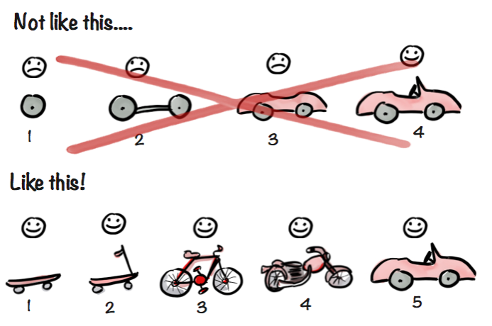
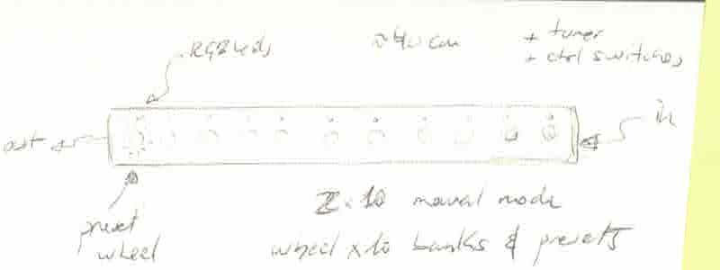

<!DOCTYPE html>
<html lang="en"></html>
<head>
  <meta charset="utf-8">
  <meta content="IE=edge" http-equiv="X-UA-Compatible">
  <meta content="width=device-width, initial-scale=1" name="viewport">
  <title> Rafael Rebolleda — Fab Academy 2020 Documentation</title>
  <!-- Google Fonts-->
  <link rel="stylesheet" href="https://fonts.googleapis.com/css?family=Catamaran&amp;display=swap">
  <link rel="stylesheet" href="../css/main.css">
</head>
<body> 
  <nav>
    <header>
      <ul>
        <li>Rafael Rebolleda</li>
        <li>ESNE + LEON</li>
        <li>Madrid, Spain</li>
      </ul>
      <p class="bio">Human Centric Research & Innovation consultant and professor. Also looking for PhD opportunities!</p>
    </header>
    <ol>
      <li><a href="../">About me</a></li>
      <li><a href="../W1/">Final Project</a></li>
      <li><a href="../W2/">CAD</a></li>
      <li><a href="../W3/">CCC</a></li>
      <li><a href="../W4/">Electronic Prod.</a></li>
      <li><a href="../W5/">3D Scan + Printing</a></li>
    </ol>
  </nav>
  <main>
    <h1>The <em>new</em> Final Project</h1>
    <p>With the pandemic still ongoing, I've found myself in July still with limited access to the Fab Lab, so in accordance with my mentor, we've decided to take a different approach to how I thought the Fab Academy would unfold. To that extent, we've come up with a new final project that will make the most of the assignments, specially using the machine as part of it.</p>
    <h2>Background</h2>
    <p>Light-painting is an art form which consists taking pictures of moving light, capturing the traces as it moves in space.</p>
    <p>I've doing light-painting photogrpah for a while, in a very rudimentary way.</p>
    <p>This is my set up: a dark background in a closet. This is actually the same room and spot from which I've had to connect sometimes throughout the pandemic confinement!</p>
    <p>And this are the lights I've used: kids toys and a laser pointer.</p>
    <p>These are just a couple of shots with this set up:</p>
    <h2>Other projects</h2>
    <p>I've seen there have been some other projects around light painting in Fab Academy. For example <a href="http://archive.fabacademy.org/archives/2017/fablabhornafjordur/students/201/week11.html">this one</a> made during Fab Academy 2017 by Ana Cabral, Ola Mirecka and Birkir Thor:</p><iframe src="https://player.vimeo.com/video/213813915" width="640" height="360" frameborder="0" allow="autoplay; fullscreen" allowfullscreen></iframe>
    <p>Or <a href="http://fab.cba.mit.edu/classes/863.17/Harvard/machines/index.html">this one</a>, which is somewhat similar:</p>
    <video src="http://fab.cba.mit.edu/classes/863.17/Harvard/machines/photos/programming/14.mp4" loop autoplay muted></video>
    <p>What I'm thinking of is something different, though.</p>
    <h2>Project Overview</h2>
    <p>For this project, I'm looking to create a machine that does something similar to another shot of mine, albeit in a more portable studio with more interesting possibilities.</p>
    <p>In short, the idea to make <strong>a closed box with moving lights create pseudo-random light-paintings via long exposure shots</strong>.</p>
    <p>The box will be completely black inside, and has a few small opening for a mobile camera phone to see thorugh. The faces will be covered in velcro to allow for easy attachment.</p>
    <p>Inside, concentric circles with LEDs will spin and their traces will be captured. Both LED behaviour and <em>some aspects</em> of the movement can be programmed and or controlled.</p>
    <p>Each circle could have up to four LEDs, as seen in the cross-section below, although that's probably not necessary to creat interesting effects, and could be a power consumption hurdle.</p>
    <p>The movement behaviour should be something similar to this example:</p><iframe width="560" height="315" src="https://www.youtube.com/embed/t1JNWnTpmkA" frameborder="0" allow="accelerometer; autoplay; encrypted-media; gyroscope; picture-in-picture" allowfullscreen></iframe>
    <p>So, ideally, we would have a step motor at the base, controlling the outer circle's rotation, and the one nested inside would spin freely.</p>
    <h2>Potential Challenges</h2>
    <p>The main challenge seems to be to pass information and power through the spinning axis, both in between circles and down to the main board after the main motor.</p>
    <p>We've got a couple of ideas of how to go about it, based on good old LPs.</p>
    <p>We've also given some thought on how to manufacture some of these pieces with a combinations of 3D printing, small ball bearings and a few  hacks:</p>
    <p>It also seems these devices are <a href="https://www.adafruit.com/product/775">also available</a> (d'oh), so it might be worth exploring the differences between the approaches.</p>
    <p>Some thought has been given to easier, linear approaches, but the results are different, closer to the examples shown above from previous years:</p>
    <h2>Spirals</h2>
    <p>These are the initial high-level thoughts about the project development. I foresee these will change rapidly in time, as it often happens as we learsn and, well, things happen :)</p>
    <h3>Iteration 1</h3>
    <ul> 
      <li>Pitch the projects</li>
      <li>Learn from other projects in Fab Academy and elsewhere</li>
      <li>Look for potential challenges</li>
      <li>Check the availability of initial components</li>
    </ul>
    <h3>Iteration 2</h3>
    <ul> 
      <li>Design and build a FabKit</li>
      <li>Connect the LEDs and the motor</li>
      <li>Design a simple program to test control of all components</li>
    </ul>
    <h3>Iteration 3</h3>
    <ul> 
      <li>Build the main circle</li>
      <li>Mount the circle on the machine base</li>
      <li>Communicate with the board over one spinning axis</li>
      <li>Add some simple interface elements to control the machine</li>
    </ul>
    <h3>Iteration 4</h3>
    <ul> 
      <li>Consider adding a second, free spinning circle inside</li>
      <li>Design and build the box</li>
      <li>Design and build the interface</li>
      <li>Test Bluetooth Networking</li>
    </ul>
    <h3>Iteration 5</h3>
    <ul> 
      <li>Put everything together</li>
      <li>Create and experiment with different light and movement programs</li>
      <li>Add information and decoration stickers</li>
      <li>Wrap up Bluetooth interface</li>
    </ul>
    <h2>In relation to the assignments</h2>
    <p>In general terms, these are the main parts of the project machine and how they relate to the relevant assignments. Of course other topics will impact the project too :)</p>
    <h3>Computer Aided Design</h3>
    <ul>
      <li>Try some new 3D software</li>
      <li>Model de box</li>
      <li>Model smaller pieces (gears, washers, strips, etc.)</li>
    </ul>
    <h3>Computer Controlled Cutting</h3>
    <ul>
      <li>Produce smaller pieces like gears</li>
      <li>Vynil stickers for the control panel</li>
      <li>Decorative engravings and stickers</li>
    </ul>
    <h3>3D printing</h3>
    <ul>
      <li>Produce supporting pieces to hold the machine</li>
      <li>Produce smaller mechanical pieces</li>
    </ul>
    <h3>Electronics Design</h3>
    <ul>
      <li>Try different electronics design softwares</li>
      <li>Design and build a custom FabKit that will be the brain of the machine</li>
    </ul>
    <h3>Computer Controlled Machining</h3>
    <ul>
      <li>Produce the box that will hold the machine</li>
    </ul>
    <h3>Embedded Programming</h3>
    <ul>
      <li>Programming the FabKit for the machine's purposes</li>
    </ul>
    <h3>input Devices</h3>
    <ul>
      <li>Create the physical interface for the machine to select different programs, turn on and off strips of leds and manually spin it.</li>
    </ul>
    <h3>Output Devices</h3>
    <ul>
      <li>Feedback from the interface to the user</li>
      <li>Motor</li>
      <li>LEDs</li>
    </ul>
    <h3>Moulding and Casting</h3>
    <ul>
      <li>Create custom knobs for the potentiometers in the interface</li>
    </ul>
    <h3>Embedded Network and Communications</h3>
    <ul>
      <li>Interface with neopixels</li>
      <li>Interface with the motor</li>
      <li>Interface with the machine over Bluetooth</li>
    </ul>
    <h3>Interface & applicacion programming</h3>
    <ul>
      <li>Create a digital UI for the machine</li>
    </ul>
    <h3>Machine Design</h3>
    <ul>
      <li>The light-painting machine described above :)</li>
    </ul><hr>
    <h1>Previously, in a pre-pandemic life...</h1>
    <p>(These were my original thoughts about the final project, but in light of the pandemic and associated restrictions, we thought it lacked focus and "tightness". I will have to follow up on this later on :)</p>
    <p>I approach Fab Academy as a means to <b>prototype as many ideas as I can around around the theme presented below.</b>, as well as aqcuiring new skills to flesh them out beyond the notebook.</p>
    <p>To that extent, I foresee the final project taking shape as we advance through the program and I see how the learnings can be applied to my interests, by then doing self-contained micro-projects for each assignment. It's a somewhat similar approach to the one described in picture below (don't know who to credit it to!)</p>
    <p>Similar to the process described above, there's an underlying theme that connects all products, but these are actually all different, not necessarily part of a bigger project.</p>
    <h1>Final project ideas</h1>
    <p>I have a number of ideas around the <b>creation and manipulation of music: instruments, effects (re-parametrizers, as a good friend liked to call them :), accesories and devices in general that enable new ways of approaching music composition and performance.</b></p>
    <p>In particular, I'm interested in moving forward the <b>expresiveness</b> available to the performer in now-classic instruments, like electric guitars, which haven't really changed much since their original concept, as well as <b>bringing HCD and HCI approaches</b> to the design and development of <b>modern computational musical devices</b>.</p></p><p>Moreover, I'm particularly interested in moving my skills <b>from one-off, handmade products to semi-industrial, machine-made products</b>. I find that some of my ideas require a precision that is hard to achieve and/or replicate by hand</p>
  </main>
</body>